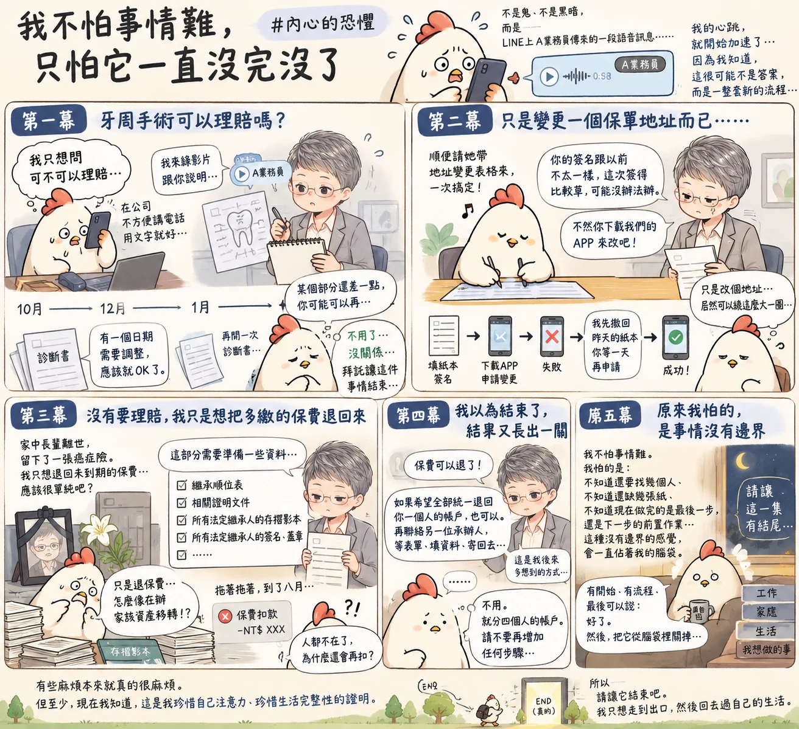

如果有人問：「你內心裡最害怕什麼？」鬼嗎？好像還好。蟲嗎？有些長得比較有創意的，雞爸爸確實會選擇保持安全社交距離。黑暗、密閉空間、恐怖片？也都沒有到真的會讓雞爸爸睡不著。
直到最近才發現，真正讓我看到手機螢幕，心臟突然漏跳一下的東西，其實非常普通。不是鬼、不是死亡、甚至不是什麼人生大事，而是一個人名出現在 LINE 上，旁邊再跟著：一段語音訊息。因為實在太害怕這段語音後面，沒有答案，卻又多出一整套新的流程。
雞爸爸是一個非常怕麻煩的人，但這裡說的「怕麻煩」，不是怕做困難的事情。如果你告訴我：「這件事很難，要花三個小時，但是三個小時之後結束。」沒問題，咖啡準備好，資料打開，三個小時給你。
雞爸爸真正怕的是：「你先做這個。」做完。「這個還要再問另一個人。」問完。「你還少一份資料。」補完。「這裡要重新簽。」簽完。「那你再聯絡下一位承辦人。」…等一下，請問這部片到底幾點散場？
第一幕：恐怖的起點 語音加上「應該就可以」
恐怖的經歷，大概要從去年十月開始說起。那時候雞爸爸因為牙周手術，想詢問保險能不能申請相關給付。問題其實非常簡單：「這個牙周手術可以理賠嗎？」
當時雞爸爸人在公司，座位旁邊都是同事，實在是不方便拿著手機詳細討論自己的牙肉和牙周到底要切哪裡、縫哪裡，所以特別用 LINE 打了關鍵字，希望可以用文字確認。
結果A業務員一連回打了幾通電話都被我掛掉之後，便很貼心地改成—錄影片。
雞爸爸我跟你說...，不只有講，還拿紙筆一邊畫、一邊解釋、一邊補充各種雞爸爸當下完全沒有想知道的資訊。因為影片很長，沒有重點段落和字幕，腦袋裡始終只有一個問題：所以，到底可不可以理賠？
後來雞爸爸努力地找了空檔，花了一大段時間把沒有重點的影片看完後，把事情往自己需要的方向推：一次問清楚、一次準備好、一次處理完。
把手術名稱、醫師說法、關鍵內容，甚至連診斷書要怎麼寫，都先跟 A 業務員確認過。雞爸爸當時心裡想：這次總該穩了吧？到了十二月，依照要求把診斷書開好、資料交出去。
A 業務員拿到資料又傳語音過來說，她剛跟相關單位確認，其中有一個日期需要修改。
改完之後「應該就 OK 了。」雞爸爸看到「應該」兩個字，心裡立刻有一種不祥的預感。後來雞爸爸慢慢發現，A 業務員有三個字特別容易讓自己血壓上升：應該、可能、或許。
一般人看到這幾個字可能只是：喔，還不確定。雞爸爸是拜託著：讓這件事結束，好嗎？果然，一月又重新麻煩醫師開了一份診斷書，好不容易資料補齊，給付也快處理完了。
A 業務員又說：「某個部分跟當初說的還差一點，如果要再申請，雞爸爸只要可以再…」雞爸爸：「不用，沒關係。」Ａ業務員：「可是…」雞爸爸：「真的沒關係。」
那時候已經一月底了。從十月開始，一個「牙周手術能不能理賠」的問題，已經陪雞爸爸跨過秋天、聖誕節、元旦，眼看就要一起過年。到了最後，雞爸爸追求的早就不是：怎麼拿到最完整的理賠？而是：拜託，讓這件事情結束。
第二幕：只是變更一個保單地址很難嗎？
如果第一集還可以安慰自己：「畢竟是保險給付，本來就比較複雜。」那第二集，就真的開始讓雞爸爸懷疑人生，因為這次的任務簡單到不能再簡單 變更保單地址。
剛好一月底要把新的診斷書交給 A 業務員，雞爸爸就想：既然都要碰面了，順便請她帶一張地址變更表格來、填一填、簽個名，一次帶走。多簡單、多完整...。
這才是雞爸爸喜歡的世界，表格真的填好了，雞爸爸簽名，A業務員收走，鬆了一口氣。
隔天—電話響了。A 業務員說：「你的簽名跟以前的不太一樣，這次簽得比較草。」所以可能沒辦法辦。然後她說：「不然你下載我們公司的 APP，可以直接在 APP 裡改。」
雞爸爸腦袋裡立刻浮出一句話：「你們有 APP 可以直接改，那為什麼昨天不先告訴我？」不過算了，那我就下載。登入，找到地址變更，填資料，按送出...失敗。
再問 A 業務員，她查了一下後說：因為昨天那張紙本已經送進系統，所以現在有一筆地址變更正在申請。因此 APP 不能再送。她需要先打電話回公司—撤回昨天那張紙本。然後請雞爸爸等一天，隔天再用 APP 重新申請。
雞爸爸坐在那裡，安靜地整理了一下這段流程：為了用 APP 改地址，先填了一張紙本。因為紙本簽名不行，所以改用 APP，但因為紙本已經存在，APP 不能用，所以現在要先撤掉紙本，才能使用原本一開始就能使用的 APP...非常完整地繞了一圈。
隔天，APP 終於變更成功，雞爸爸看著成功畫面，竟然有一種破關的感動。
明明只是下載APP改地址。卻經歷：籤紙本、簽名比對被退、下載 APP、APP變更失敗、紙本撤件等一天、重新申請...。這時候雞爸爸開始慢慢發現：真正可怕的，好像從來不是事情困難。而是—一件原本五分鐘可以做完的事情，突然開始長流程。
第三幕：沒有要理賠只是想把多繳的錢退回來
前兩集如果還只是暖身，第三集才是真正的大魔王。家中長輩安詳離世之後，還留有一張癌症險。這張保單沒有掛壽險也沒有要申請癌症理賠。雞爸爸真正想做的事情只有一件：把已經繳了、後面沒有使用到的保費退回來。
A 業務員說，這部分需要我們準備一些資料。繼承順位表。好。相關證明文件、所有法定繼承人的存摺影本。嗯？所有法定繼承人的簽名、蓋章…
雞爸爸開始覺得，自己明明只是要退一筆多繳的保費，怎麼突然有一種準備辦理重大資產移轉的氣氛，更奇怪的是，原本保費就是從雞爸爸的帳戶扣款。所以忍不住問：
「既然錢原本是從我的帳戶扣，為什麼不能直接退回原本帳戶？」
A 業務員回答：「公司規定。」好，那就算了。偏偏因為所有法定繼承人都要簽名、蓋章、準備資料，四個人的時間又不好湊，事情就這樣拖著。
拖著拖著—到了八月，新的續期保費又被扣走了。雞爸爸看到扣款，真的愣了幾秒。去年是保險公司通報聯繫我們的，退費資料也在處理。為什麼系統還會再扣一次？
A 業務員說：「這個我可能要再問一下公司...」
雞爸爸一看到「可能」：第一集的恐怖記憶又回來了。後來她又說，新扣的這筆，可能也要等「理賠」案件一起處理。雞爸爸忍不住說：「可是我們沒有申請理賠，只是退保費。」
A 業務員：「這是你們一般的不理解，但公司就是把它叫做理賠，我也可以用你的話說...」
雞爸爸停一下，算了、真的算了，要叫理賠就叫理賠，叫它「保費返鄉計畫」也沒關係...只要最後可以結案...
恐怖的不是流程多 是以為結束了 又長出一關
後來相關單位受理，保費可以退。雞爸爸到這真的有種Boss 終於剩最後一滴血的感覺。
結果上班的時候，手機又跳出A業務員的名字：心裡真的很不想接...
貼心的A業務員說：因為原本保費都是從雞爸爸帳戶扣，如果希望之後全部統一退回雞爸爸一個人的帳戶，也可以。只要—待會收到簡訊之後，再聯絡簡訊上面的另一位承辦人...等對方提供相關的表單，填完資料再寄給他...
……
雞爸爸忍不住問：「我真的不太理解。」一開始你們說，因為涉及繼承，所以只能退給所有法定繼承人，所以我們準備了繼承順位資料。找齊四個人簽名、蓋章，準備戶籍資料，附存摺影本，好不容易全部弄完。結果現在又說：其實可以全部退到一個人的帳戶？
A 業務員解釋：這是她後來又幫雞爸爸多想到的方式。如果雞爸爸沒有很在意分到四個戶頭的話，照原本流程，什麼都不用再做。只是前面的款項還是會分別退到四個人的帳戶，如果要集中到雞爸爸帳戶，才需要再找新的承辦人、等資料、填資料、寄回去。
雞爸爸幾乎沒有思考：「不用。」「就分四個人的帳戶。」
真的不用、謝謝。請不要再替雞爸爸想更好的方案。到了這個階段，雞爸爸對「方便」的定義已經完全改變。一般人的方便可能是：錢最後都進同一個帳戶...但應該在幾個月前。
雞爸爸現在的方便是：從這一秒開始，不要再增加任何步驟。
不要再寄東西給我、不要再給我表格、不要再叫我找另一個人。
如果這是一款遊戲，雞爸爸不需要隱藏寶物、不需要 100% 成就、也不要隱藏結局。
旁邊就算還有一個支線任務閃著金色驚嘆號—請讓它閃 雞爸爸現在只想從出口走出去。
P.S.後記：今天收到退費，理賠科的說115年多扣的部分由另一個部門負責，會直接退還到扣款的帳戶...雞爸爸內心O.S.幸虧沒有再去填什麼表格...不然搞不好現在還在寄信...
原來雞爸爸真正怕的，是事情「沒有邊界」
寫到這裡，雞爸爸才終於明白：自己一直說「我很怕麻煩」，其實還不夠準確，雞爸爸不是怕事情難。有些很複雜的問題，只要它有明確規則、有順序、有結束點，反而沒有那麼可怕。真正讓雞爸爸焦躁的是：事情沒有邊界。
不知道還要找幾個人、不知道還缺幾張紙、不知道現在完成的是最後一步，還是下一步的前置作業。更折磨人的甚至不是實際花掉的時間，而是事情只要沒有完成，就會一直佔著腦袋裡的一小塊地方。
人在吃飯，它還在。陪孩子，它還在。晚上躺到床上，腦袋突然又跳出來：「欸，那個人是不是還沒回我？」有些事情實際處理可能只有十五分鐘，卻可以在腦袋裡住上三天。原來這才是雞爸爸真正害怕的「麻煩」。
而這次把它寫成文字之後，雞爸爸反而看見了另外一件事情。我之所以這麼討厭麻煩，也許不只是懶，更不只是追求效率。雞爸爸其實很喜歡一種感覺：完成。
一件事情有開始，知道自己正在做什麼，一步一步往前。最後終於可以說：好了。然後把它從腦袋裡關掉，把原本被占住的那一小塊注意力，重新還給生活。
所以現在回頭想，「怕麻煩」好像也不完全是一件壞事。它提醒雞爸爸，我其實很珍惜自己的注意力。不喜歡人生被很多沒有結束的小事情切得碎碎的。
比起同時開十個視窗，我更希望一件一件把它關掉，再把剩下來的時間，留給真正想做、想看、想陪的人，這大概就是這份恐懼照出來的雞爸爸。
所以雞爸爸現在也不打算勉強自己：「從今天開始，我要成為一個完全不怕麻煩的人！」
不用，有些麻煩，本來就真的很麻煩。只是下一次手機再次跳出 A 業務員的名字，或是旁邊再出現一段語音訊息…雞爸爸的心臟大概還是會先漏跳半拍。
看到：「我再幫你確認一下。」可能還是會開始緊張。
看到：「其實還有另外一個方式……」甚至可能想直接把手機翻面...
但至少雞爸爸知道，那個不舒服的東西叫什麼了。不是怕那個人，不是怕填表格，也不是怕事情困難。只是很怕一件事情永遠結束不了，永遠不知道後面還有沒有下一關...
所以，如果原本的流程已經可以完成，就讓它完成吧。如果有什麼支線任務還閃著金色驚嘆號—請讓它繼續閃，雞爸爸只想走到出口，把門關上，然後回去過自己的生活。
因為雞爸爸害怕的不是恐怖片裡跑出來的鬼，而是電影明明已經演了兩個半小時，片尾字幕都快升起來了—螢幕突然一黑，慢慢浮出兩個字：「繼續...」